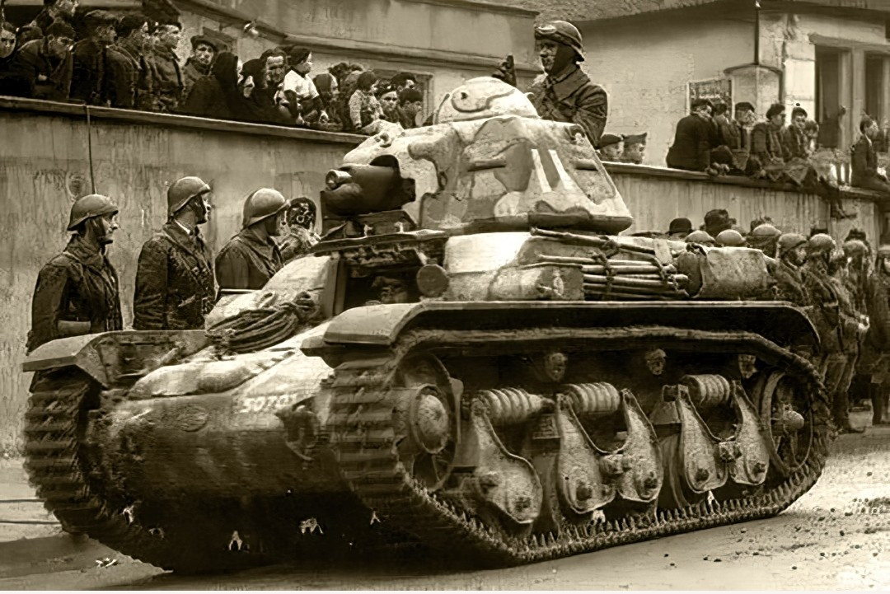

Présentation générale
Le Renault R35 est le char léger standard de l’infanterie française à la veille de la Seconde Guerre mondiale. Conçu pour accompagner les fantassins, il se distingue par son blindage épais, sa silhouette compacte et sa robustesse.
Produit à plus de 1 600 exemplaires, il constitue l’un des blindés les plus répandus dans les bataillons de chars d’infanterie entre 1936 et 1940.

Caractéristiques techniques
- Constructeur : Renault
- Production : 1936–1940 (≈ 1 600 exemplaires)
- Équipage : 2 hommes (chef de char + pilote)
- Armement : Canon SA18 de 37 mm + MAC 31
- Blindage : jusqu’à 40 mm
- Vitesse : 20 km/h
- Rôle : Appui rapproché de l’infanterie
- Poids : 10,6 tonnes
- Moteur : Renault V4 – 82 ch
- Autonomie : 130 km
- Transmission : manuelle 5 vitesses
- Suspension : bogies à ressorts hélicoïdaux
- Largeur chenilles : 260 mm

Conception et silhouette
Le R35 possède un châssis arrondi, une tourelle APX‑R compacte et des chenilles courtes. Sa silhouette trapue et son blindage épais en font un blindé résistant, mais son canon de 37 mm reste insuffisant face aux chars allemands de 1940.
- Tourelle APX‑R
- Blindage épais pour un char léger
- Châssis compact
- Mobilité limitée
- Hauteur : 2,13 m
- Longueur : 4,02 m
- Largeur : 1,87 m
- Silhouette : très compacte, profil arrondi
- Points forts : blindage excellent pour un char léger
- Points faibles : canon SA18 trop faible contre les blindés
Utilisation en 1939–1940
Déployé dans les bataillons de chars d’infanterie, le R35 combat en France durant la campagne de mai–juin 1940. Après l’armistice, de nombreux exemplaires sont capturés et réutilisés par l’armée allemande sous la désignation 35R 731(f).
- Théâtres : France, Levant, Balkans
- Réutilisation : 35R 731(f) par la Wehrmacht
- Rôle : soutien d’infanterie, défense statique
- Performances : blindage excellent mais mobilité faible
Page du Musée HOP WW2 – Section véhicules français